Your HTML is the brief. The engine reads it and redesigns it.
Content-Derived Design — palette, motifs, and motion are extracted from the concrete nouns, dates, and colors already in the source HTML. Not a mood board. A real artifact. npx reimagine-it ships one standalone HTML file — in 17 directions (including a photoshoot lookbook and a living particles field), each carrying a AAA motion pack: kinetic type, magnetic buttons, glow-follow cards, inertia-orbit 3D with fact billboards. Offline. No Figma. No CDN.
The engine reads the HTML you point at, extracts concrete nouns / dates / colors / proper nouns, and builds a design language from them. Source facts are not invented.
01 · Extract
Read the source
Find proper nouns, dates, color words, numbers, and anchor phrases in the HTML you point at. These are the raw material.
02 · Derive
Build the palette
A Texas notebook gets navy / red / gold from the Lone Star flag. A restaurant menu gets clay / saffron from the dish names. ≤ 5 colors, all from content.
03 · Motif
Pick the repeating mark
Lone Star, beam sweep, smoke tendril, pulse wave — one geometric motif from the source carried through every section.
Auto scored each source into a subject lane and forbade the same silhouette twice. A juice bar, a skate deck, and a streetwear drop cannot all become one bar-chart poster. Palettes come from hex colors already written into each source. Full case studies →
Two community proofs — jobs none of the journeys cover. A clinic bulletin lands infographic (352 · 100%); a fashion-house photoshoot campaign lands the lookbook editorial spread (188 · 100% · 19/19 facts). Committed stills regenerate byte-identically from the sources in examples/community/.
clinic bulletin — desktop --auto → infographicclinic — mobile
Maison Vesper campaign — desktop --auto → lookbookcampaign — mobile
Proof — real public-domain pages
Six U.S. government and public-collection pages — National Park Service, NASA, NOAA/NWS, Census Bureau, Federal Register, Smithsonian — rebuilt by Auto with no declared palette to lean on: the engine derives color from language alone. Artemis II lands the 3js orbit view (100%), the hurricane outlook a landing brief (100%), the Yellowstone bulletin an editorial feature (84% — the floor is 80). The 2026 additions stress new failure modes: the Census income brief carries nine dollar figures that must survive (infographic, 21/21), the Federal Register FOIA rule is all dates and citations (simulation, 17/17), and the Smithsonian Apollo 11 object page is descriptive copy (simulation, 21/21). Sources are public domain, committed in examples/public-sources/.
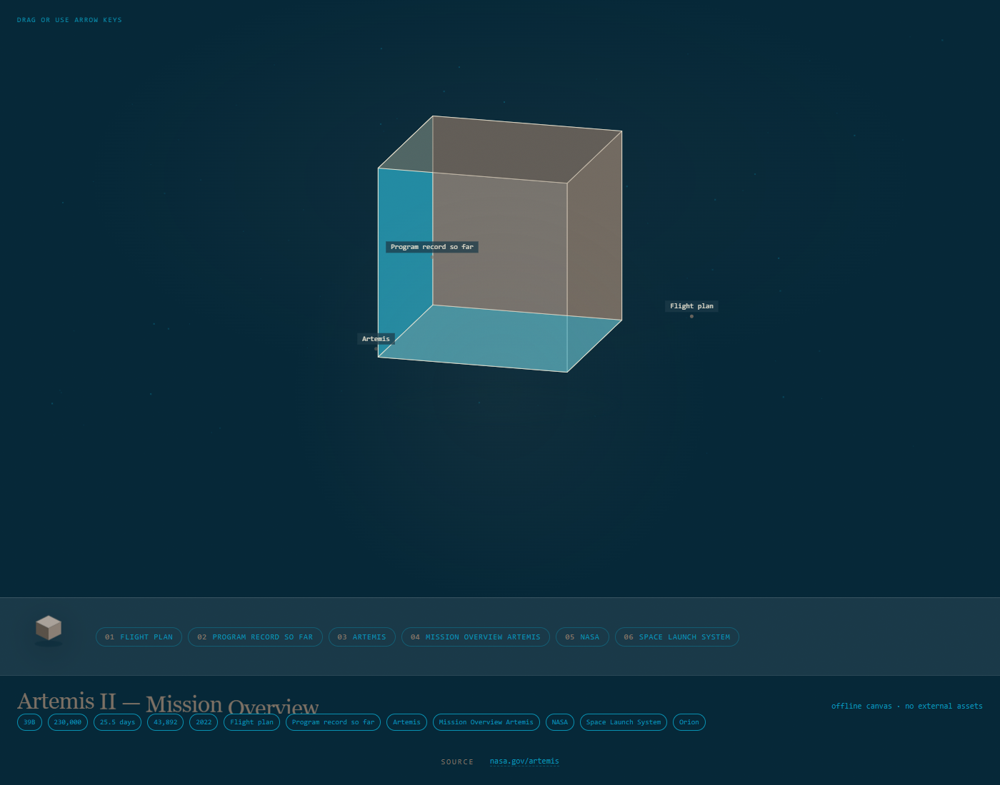
Artemis II — desktop --auto → 3js
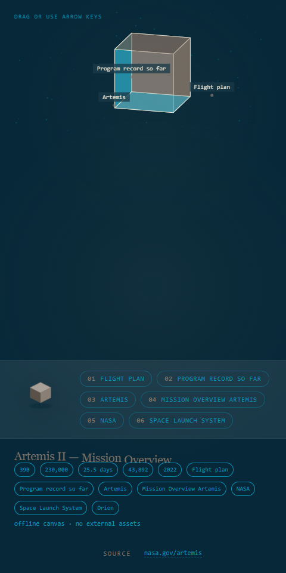
Artemis II — mobile
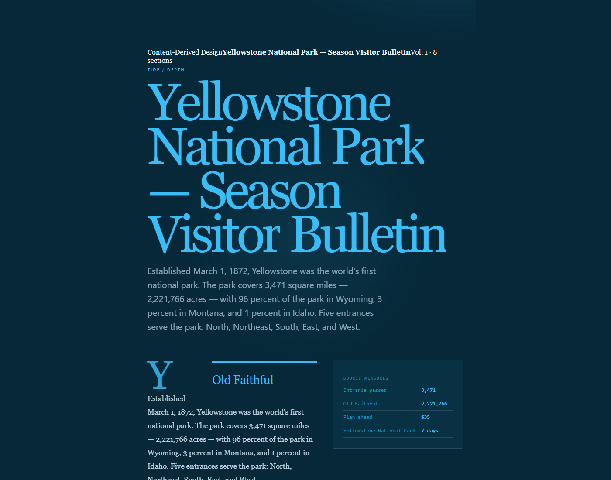
Yellowstone bulletin — desktop --auto → editorial
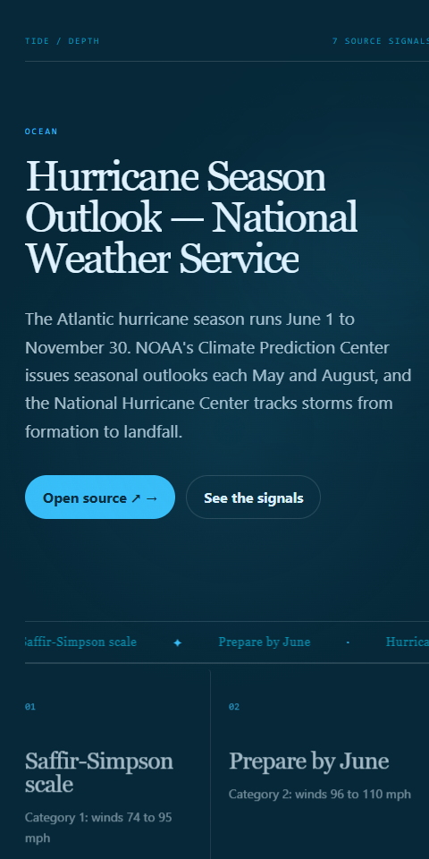
hurricane outlook — mobile --auto → landing
Census income brief — desktop --auto → infographic
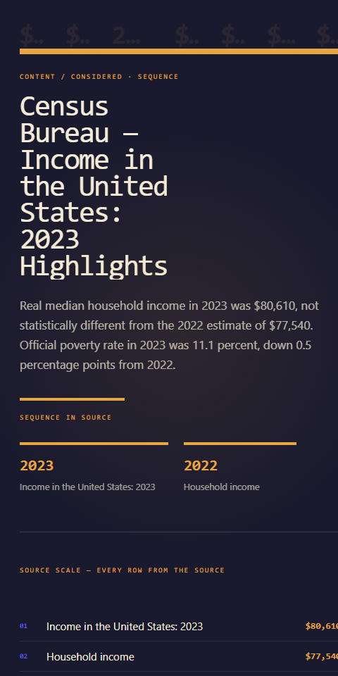
Census income brief — mobile
Federal Register FOIA rule — desktop --auto → simulation
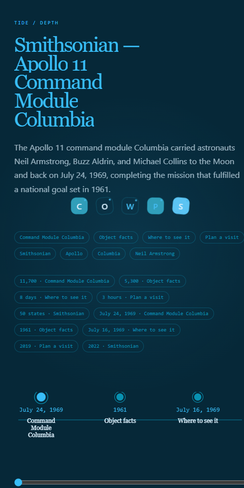
Apollo 11 Columbia — mobile --auto → simulation
Source → Auto, on desktop and phone
Each composite is the plain source on the left and the Auto page on the right, with a phone frame. Use it to check facts and reading path, not just color. Design Health — CI quality gate →
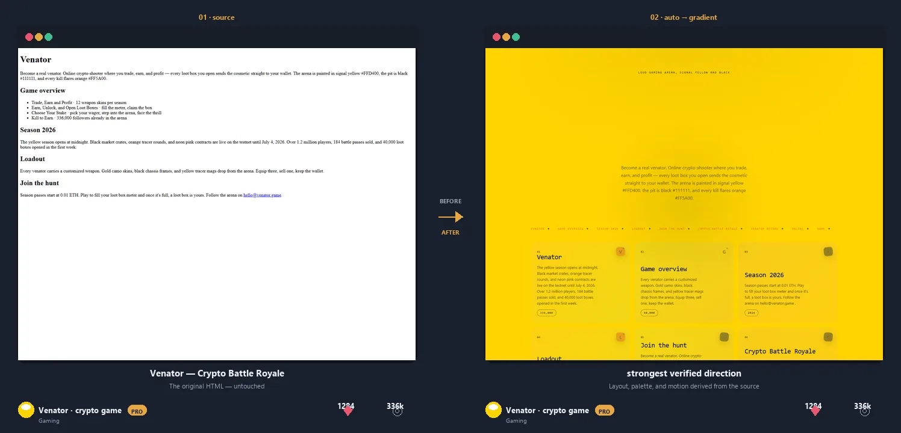
Game → signal-yellow gradient → landing → mobile
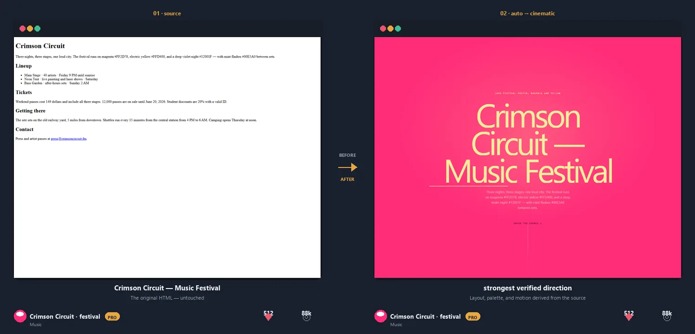
Festival → magenta cinematic → gradient → mobile
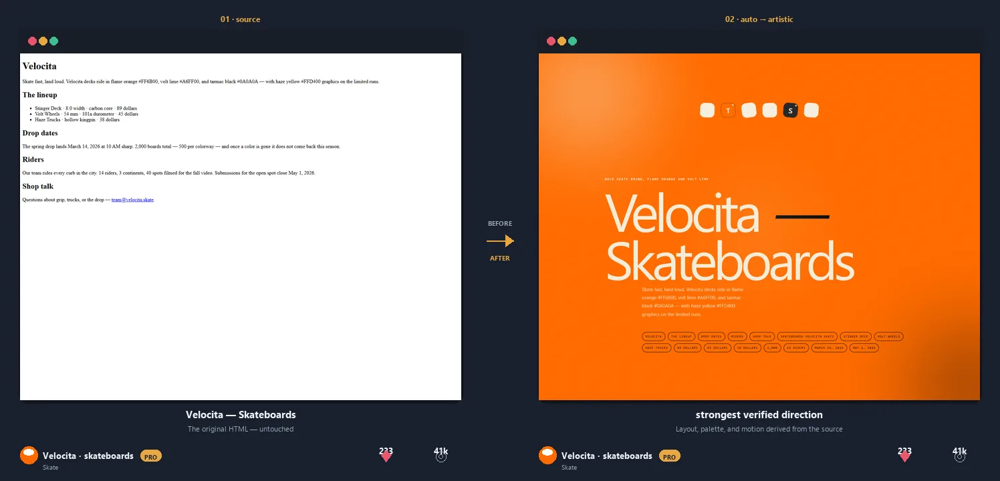
Skate brand → orange poster → landing → mobile
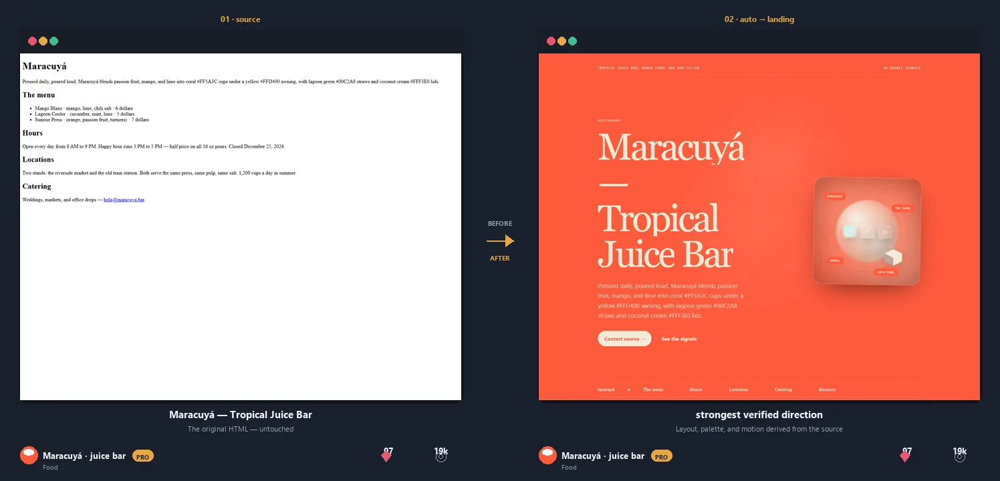
Juice bar → coral landing → photography → mobile
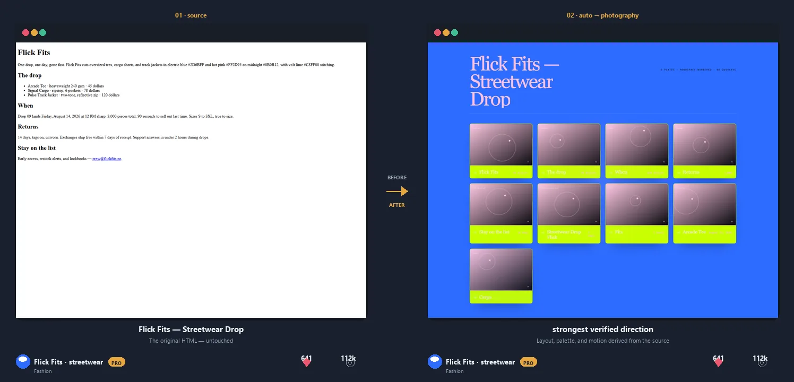
Streetwear → blue folio → showcase → mobile
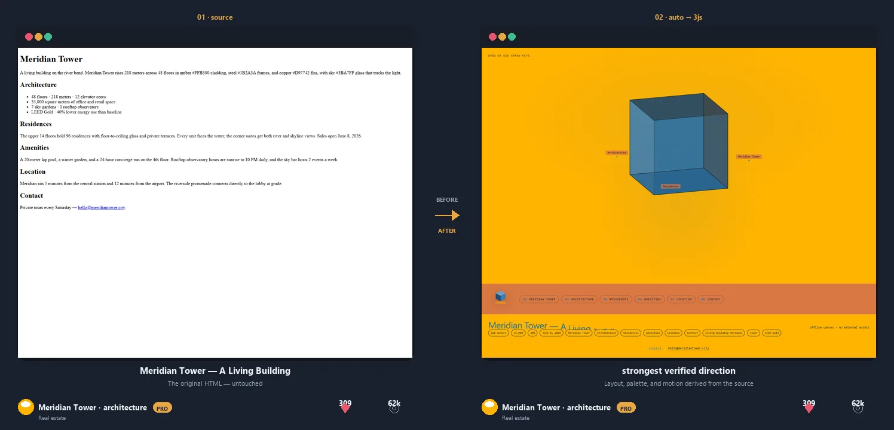
Building → amber 3D → editorial → svg → mobile
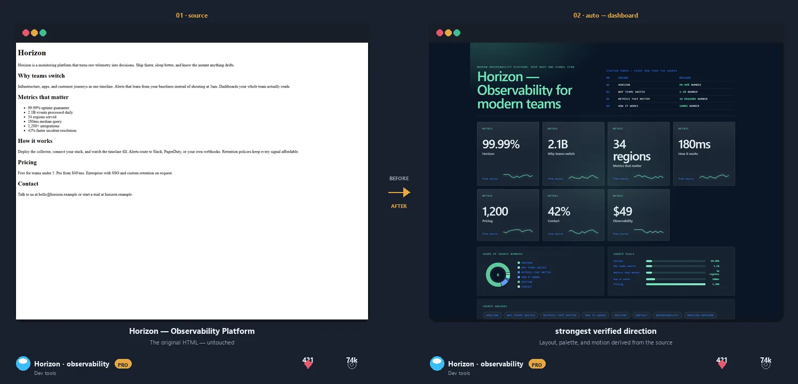
Dev tools → navy dashboard → gradient → mobile
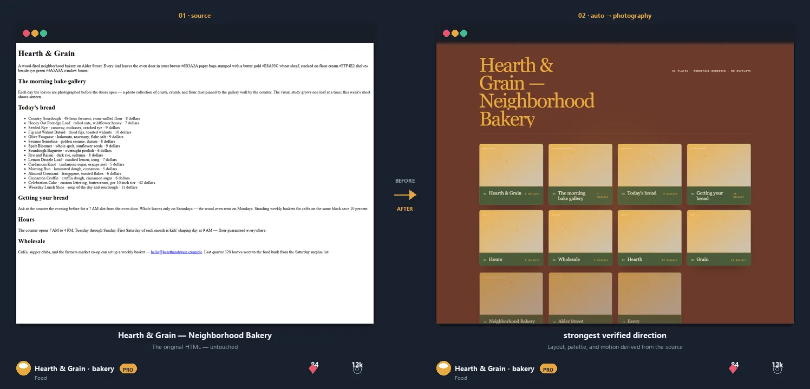
Bakery → crust-brown folio → landing → mobile
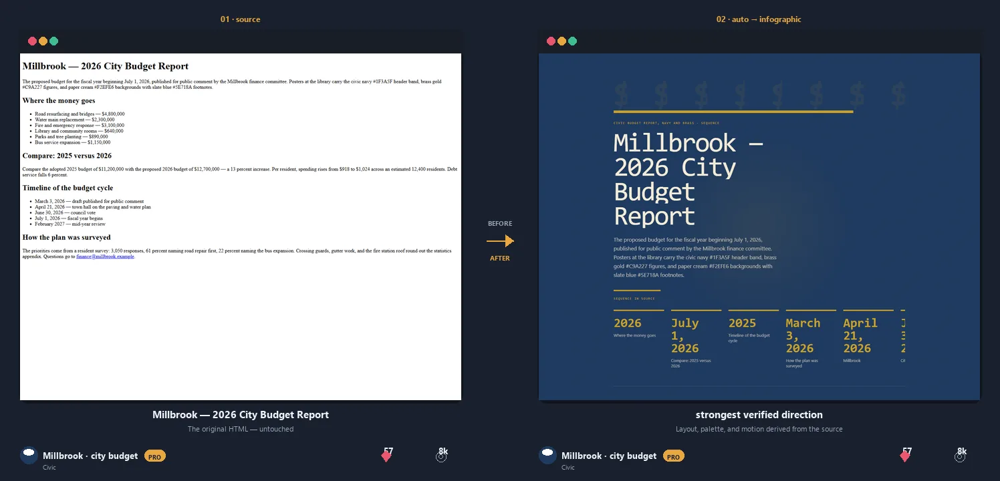
Civic budget → brass infographic → simulation → mobile
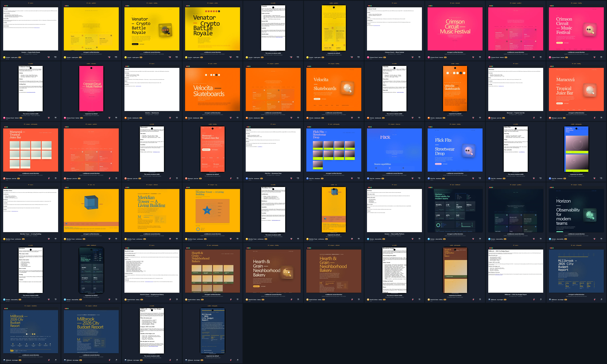
How to judge it: check the facts, the reading path, and whether the composition belongs to the subject—not just whether the colors changed.
Seventeen directions. One honest method.
Every token is a real generator in the engine — each one reads the same extracted content and builds a structurally different composition. Layouts are generated; source facts are not invented.
webpageMeasured reading hierarchy
mobile
Same source, 18 ways to compose it — 17 tokens plus auto, which scores three candidates and ships the strongest. Desktop and phone, real CLI output. Flip ◐ Before / After to see the untouched source, or ▶ Live demo to scroll and interact with the actual generated page.
01
webpage
Articles and source documents
Measured reading hierarchy
02
landing
Products and services
Hero and action rhythm
03
dashboard
Metrics and operations
Console, KPIs, and status
04
infographic
Facts and comparisons
Shared scales and timelines
05
cinematic
Narrative moments
Depth and paced chapters
06
artistic
Posters and expressive pages
Asymmetric type and layered fields
07
photography
Portfolios and collections
Folio plates and captions
08
svg
Marks and diagrams
Inline geometric illustration
09
3js
Spatial stories
Offline orbitable canvas
10
simulation
Time and process
Playable timeline and scrubber
11
glass
Modern panels and cards
Frosted backdrop depth
12
editorial
Long-form text and essays
Magazine layout with drop caps
13
motion
Scroll-driven stories
Animated reveals and parallax
14
gradient
Bold brand presentations
Gradient mesh cards and text
15
showcase
Capability demonstrations
Motion-forward capability cards and stats
16
lookbook
Photoshoots and collections
Editorial spread with numbered looks
17
particles
Living networks and signals
Interactive constellation of the anchors
Infographics — wide and tall.
A data-heavy source — 14 species, 320 miles, 1,180 volunteer hours, a 42% jump — rendered as a dense infographic at desktop width and phone width. Same command, two aspect ratios.
wide — desktop --token infographictall — mobile
Source: Cedar & Ash — 2026 Season Field Report · command: npx reimagine-it -i source.html -t infographic -o report.html · every number below appears in the source.
Gaming — loud, yellow, unmissable.
A crypto battle-royale page — loot boxes, kill-to-earn stakes, a season clock — becomes a signal-yellow gradient arena at desktop width and phone width. The palette comes from the hex colors already in the source, not from a style prompt.
wide — desktop --auto → gradient
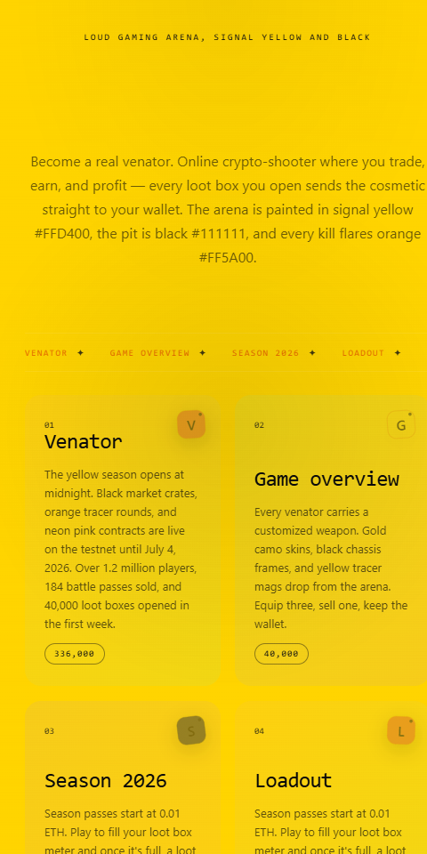
tall — mobile
Source: Venator — Crypto Battle Royale · command: npx reimagine-it --auto -i source.html · Auto scored gradient first for gaming sources: the arena reads as a brand surface, not an ops console.
Observability — plain SLO page to mission control.
A bare uptime/SLO source — 99.99% availability, 2.1B events, 180 ms p50 — becomes a navy ops console at desktop width and phone width. Auto scores dashboard first for operational sources; KPIs come from numbers already in the source.
Point /reimagine-it at a building page and it does the visual heavy lifting: an orbitable 3D object, a magazine feature, and a living SVG diagram — every one derived from the same source, no direction from you needed.
Source: Meridian Tower — A Living Building · the amber, steel, copper, and sky palette comes from the hex colors in the source · the 3D object orbits (drag or arrow keys) and the diagram spins and breathes — real engine output, not mockups. See all nine journeys ↓
For agents — MCP server & one-file skill
The same engine, exposed to any MCP-compatible host (Claude Code, Codex, Copilot, Gemini CLI, and friends) or used as a single-file agent skill. Deterministic, offline, no API keys — an agent can generate, self-audit its own output with 19 rules, and explain the design decision.
Node native HTTP/streamable transport; no Python required.
8 tools
Generate, rank, verify
reimagine one direction from raw HTML
design_auto choose · generate · verify · explain
design_variations ranked directions + contrast sheet
design_lock capture a brand surface as JSON
extract_content inspect the source evidence
list_tokens discover the 17 directions
audit_html 19-rule Design Health check
list_rules the full rule registry
An agent can prove its own output before shipping it.
Design decision report
Inspectable "why"
voice editorial | grotesque | techno | …
palette OKLCH, source accent rotated
art primitives actually used
score 136-point design-QA
fidelity every source fact present
Written beside the artifact with --emit; Auto explains its pick from real evidence.
Measured quality — every direction benchmarked
All 17 tokens × 4 representative sources score 100/100 usability and full fidelity, with 96.8% mean class-set difference (no two directions produce the same page; the closest pair, webpage+landing, rose from 76% to 91.7% after landing grew its own hero form). Benchmarked against the same bar Auto itself applies: standalone HTML, source title and anchors retained, focus-visible, reduced-motion, no placeholder copy, no external fetch.
CI-enforced
Proof regenerates — or CI fails
Every committed example artifact must regenerate byte-identically from the committed engine. Every screenshot stays in sync. npm pack must match the intentional file list exactly.
Property-tested
Honesty is fuzzed
The extractor's "no invented facts" contract runs against hostile and malformed input; a 250-seed weekly stress harness holds the fidelity floor across every token × source cell. The audit linter itself is fuzzed too.
Supply-chain
Hardened end to end
Actions SHA-pinned + Dependabot-bumped; CI installs with --ignore-scripts and hash-verified PyPI pins; releases carry cosign signatures + SLSA provenance; CodeQL and Semgrep scan every push.
Guarantee
Offline & deterministic
Output is one standalone HTML file — no CDN, no API keys, no telemetry. Same input + seed → byte-identical output: clients can re-derive any published artifact themselves.
The audit is deterministic and heuristic — not a claim of full WCAG conformance or visual taste. Review a generated page before shipping it to a client. Full details: README audit posture →
Install — one command
Works in Claude Code, Cursor, Codex, Copilot, Gemini CLI, Factory Droid, Windsurf, Pi, and any Agent Skills host. One chair: skills/reimagine-it/. This is Kayforkind’s Content-Derived Design CLI — not Keith Mangold’s reimagineit.ai interview SaaS.
7 typographic voices ✦ OKLCH palette system ✦ generative art primitives ✦ composition bands ✦ self-critique design score
Try it — no install required
Paste any HTML below. Pick a token — or let Auto draw three directions with a typographic voice, a harmonious palette, and a 136-point design score. The engine runs entirely in your browser. Same method the agent skill uses. New here? ▶ Watch the 60-second teaser (captioned) or the 39-second full walkthrough.